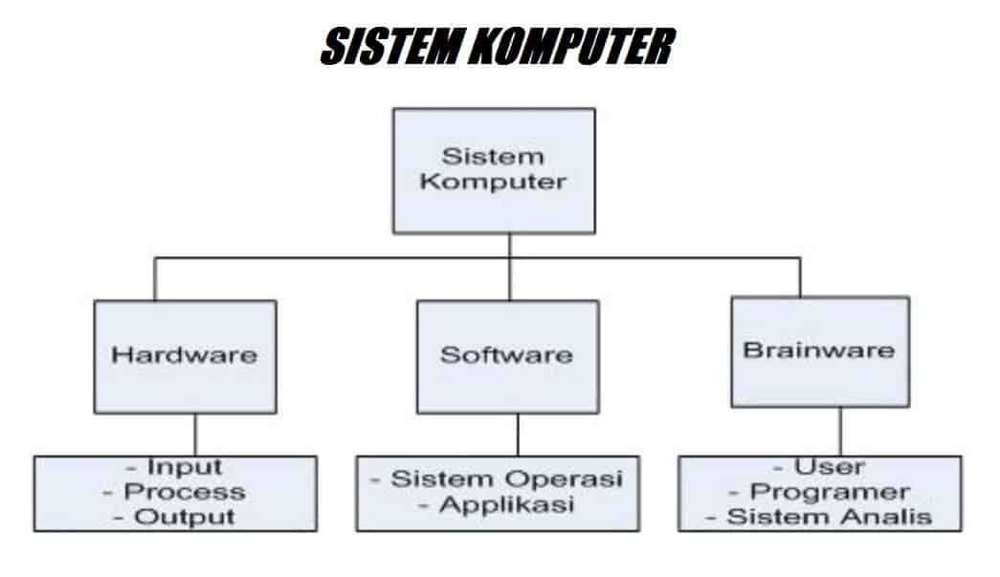

Sistem Komputer Sistem Komputer Sistem Komputer Sistem Komputer Sistem Komputer

Materi Pembelajaran
Untuk rangkuman sistem komputer kalian bisa klik link di bawah ini ya!
Rangkuman Sistem Komputer
untuk penjelasan lebih lengkapnya kalian bisa baca file di bawah ini ya!
Kembali ke menu